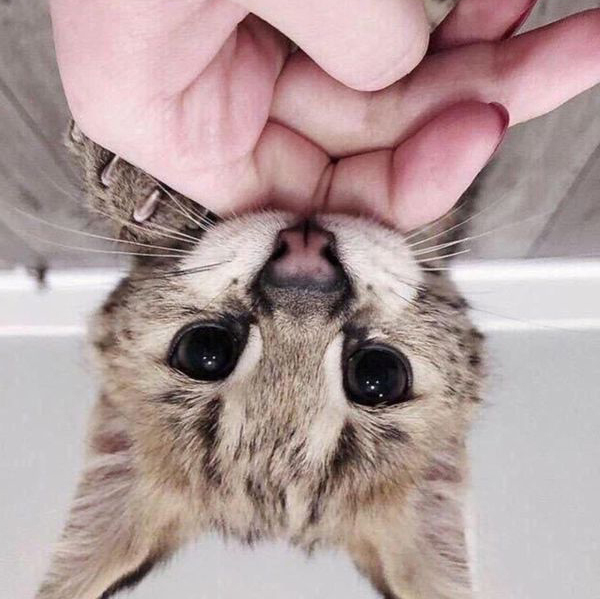

Ориентация изображения
Исходное изображение при просмотре выглядит обычным, но в EXIF информации указано, что оно повернуто на 180 градусов.
Меняя настройки image-orientation, сможем увидеть изображение с поворотом и без него.
